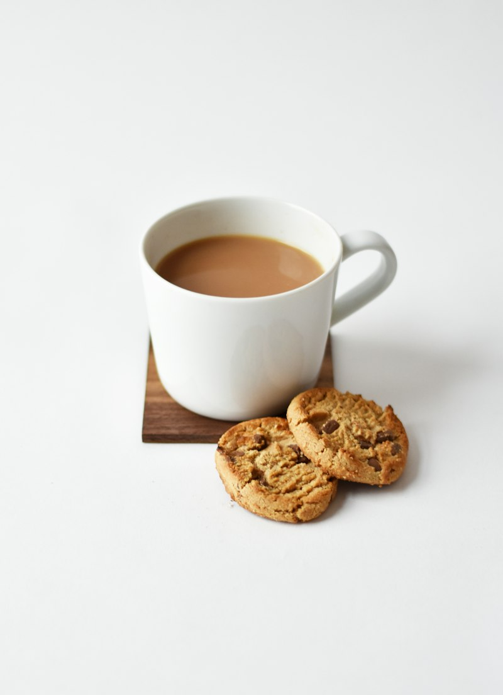

Joint & Spine Ease
Guided Movement & Joint Mobility
Slow, deliberate postures paired with breath awareness to enhance joint lubrication, relieve muscular tightness, and improve general posture without strain.
Explore our thoughtfully curated natural wellness therapies. Every offering is designed to nurture physical vitality, ease mental tension, and support your body’s natural rhythm in a serene healing environment.
A thoughtful consultation begins with understanding your daily lifestyle. During your initial session, our certified naturopathic physicians take time to review your daily energy rhythms, physical comfort levels, digestion, and stress patterns in an unhurried, welcoming setting.
Following your assessment, your doctor works with you to design a personalized natural wellness plan that may combine targeted water applications, mineral packs, wholesome nutritional adjustments, and gentle movement routines.
Our wellness evaluations focus on natural health education, preventive lifestyle habits, and supportive care. They are designed to complement, not replace, your regular medical care.
Gentle, restorative yoga modalities designed to support postural alignment, ease muscle tension, and cultivate breath awareness. All sessions are adapted to your personal comfort level by our certified yoga therapists.
Slow, deliberate postures paired with breath awareness to enhance joint lubrication, relieve muscular tightness, and improve general posture without strain.
Passive, prop-supported postures that encourage deep physical ease and safe tendon relaxation, tailored especially for individuals experiencing physical fatigue.
Structured breathing practices including diaphragmatic pacing and alternate nostril flow, taught by certified practitioners to help quiet an agitated nervous system.
Systematic guided awareness that transitions the mind into a tranquil, meditative state between wakefulness and sleep, fostering deep emotional stillness.
Targeted therapeutic postures and core stabilization sequences formulated to decompress lumbar discs, strengthen thoracic posture, and relieve chronic neck stiffness.
 Vital Balance
Vital Balance
Gentle vinyasa transitions coupled with mindful respiration to stimulate lymphatic circulation, improve joint lubrication, and re-establish neuromuscular vitality.
Complementary wellness treatments inspired by traditional naturopathy, designed to encourage relaxation, gentle circulation, and healthy daily equilibrium.
Applications of steamed botanical compresses infused with calming herbs, placed over the spine or abdomen to encourage localized warmth and comfort.
Facilitated mindfulness practice focusing on grounded presence, quiet sitting, and gentle attention training to ease mental chatter and support clarity.

Daily RoutinePractical consultation on morning sunlight exposure, balanced meal timings, screen wind-down rituals, and hydration to sustain balanced energy throughout the day.
A warm botanical foot bath enriched with natural volcanic clay and sea salts to relieve tired legs, soothe nerve endings, and cultivate a sense of grounding.
 Herbal Essence
Herbal Essence
Gentle steam diffusion and acupoint inhalation using therapeutic lavender, eucalyptus, and frankincense to relieve sinus tension and quiet autonomic stress.
Immersive therapeutic sound sessions with hammered bronze singing bowls, creating harmonic overtones that promote deep neurological stillness and mental rest.
We keep your appointment process transparent, peaceful, and straightforward from your initial reservation through your ongoing home self-care.
Browse our offerings and choose the therapy category that best resonates with your current physical comfort and wellness goals.
Select an available appointment time through our portal. You will receive clear arrival guidance, including what comfortable attire to bring.
Arrive at our calm sanctuary for an initial intake with your practitioner, ensuring your therapy session is tailored specifically for you.
Complete your session with calm guidance, followed by clear home self-care recommendations and downloadable receipt records.
Reserve your therapy appointment online in just a few minutes, or sign in to your patient portal to manage upcoming appointments and treatment progress.